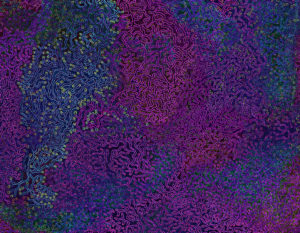
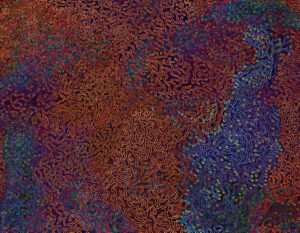
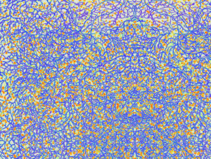
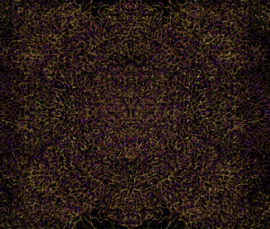

{#16} Gli ecosistemi sono di chi li abita
consigli di lettura, dati, ecosistemi, natura, notte dei ricercatori, scienza

«Vorrei spendere una parola in favore della Natura, dell’assoluta libertà e dello stato selvaggio, contrapposti a una libertà e a una cultura puramente civili; vorrei considerare l’uomo come abitante della Natura, come sua parte integrante e non come membro della società.»
H.D. Thoreau, Walden
Carə membri della naturietà, o della societura,
si avvicinano i giorni più simbolici dell’anno, quelli in cui tradizionalmente (una tradizione antica di ben… due anni!) noialtri, di ritorno verso le rispettive famiglie, ci incontriamo brevemente a Bologna per fare il punto della situazione. Quest’anno però la seconda ricorrenza del sepolcrale Sciencemare, e la prima del lussureggiante Science before Christmas, non potranno essere celebrate se non con una passeggiata simbolica.
In questa mail:
- Consigli di lettura
- Bologna 19 Dicembre: Dati Selvaggi
- La notte in bianco della ricerca
E già che ci siamo, salutiamo la più giovane new entry del nostro gruppo: è infatti venuta al mondo A.D.A. (Advanced Digitalized Automaton) – una creatura che speriamo migliore di tutte quelle che l’hanno preceduta. Come regalo al suo D.A.D. (che invece non sta per Didattica A Distanza) potreste contribuire a questo, che per quanto cadavere è ancora squisito!

Consigli di lettura
- Boschi selvatici, occasione di rigenerazione urbana, Trentanovi et al. (2019), TERRITORIO.
«I piani urbanistici individu[a]no per questi boschi destinazioni spesso in contrasto con i valori ecologici di cui essi sono portatori». In avvicinamento alla passeggiata ai Prati di Caprara del 19 Dicembre, vi proponiamo una riflessione sulle aree urbane che si stanno rinselvatichendo. Purtroppo, però, salvo alcune porzioni, l’articolo non è accessibile online, e la rivista non è facilmente reperibile. L’unico modo alternativo che conosciamo per ottenere l’articolo è chiederlo direttamente agli autori, che saranno felici di corrispondervi (oppure cliccate qui, ma non ditelo a nessuno!). L’argomento è anche trattato in un articolo di Enrico Curzi e Andrea Zinzani su Effimera. Un ulteriore approfondimento sul rinselvatichimento, questa volta a Milano, si può trovare qui. - Are Bill Gates’s Billions Distorting Public Health Data?, Tim Schwab, The Nation, 03/12/20. Analisi approfondita di come le fondazioni filantropiche servano a creare un sistema di ricerca privato parallelo alle istituzioni pubbliche, coinvolgendo il mondo della pubblicazione scientifica. Aggiungiamo qualche considerazione nostra. Sul sito dell’Organizzazione Mondiale della Sanità c’è una bella infografica interattiva che mostra la distribuzione dei fondi, da cui si evince che la Bill & Melinda Gates Foundation è il secondo donatore. Tutti i loro fondi sono “specified voluntary contributions” che, a differenza degli “assessed contributions”, sono vincolati a finanziare i programmi che il donatore stesso sceglie. Per approfondire le diramazioni e i conflitti di interesse della fondazione può tornare utile un articolo del 2011 di Stuckler, Basu e McKee. Infine la contiguità del direttore di Lancet, Richard Horton, con la fondazione B&MGF ci appare molto discordante rispetto alle belle parole spese riguardo il ruolo delle disuguaglianze sociali nella progressione di COVID-19.
- Pandemia e sciopero degli affitti. Fra le conseguenze più sociali (nel senso di condivise) della pandemia c’è il fatto che molte persone stanno pagando l’affitto di stanze, corridoi, cucine comuni che non possono utilizzare. Gli studenti inglesi hanno deciso che è abbastanza per lanciare la più grande ondata di scioperi degli affitti dagli anni ’70. Se pensate che queste problematiche odorino di tatcheriano, vi segnaliamo un canale Telegram dal nome suggestivo che si occupa delle nostre città.
- Letture dal Gruppo di Ricerca Pandemico. Di conversazioni su scienza e società, in questi tempi di pandemia, ad eXtemporanea ne abbiamo avute tante, anche se molte stanno ancora ribollendo sotto la superficie. Non siamo però l’unica comunità informale che si è confrontata con gli interrogativi scientifici, sanitari e politici che il virus ha scelto per questa inaspettata interrogazione. In questi giorni abbiamo scoperto il gruppo di ricerca pandemico, gentilmente ospitato dal server antifascista bolognese lattuga.net. Un tentativo che ci pare interessante per la volontà di portare avanti una critica radicale al presente che non sacrifichi il rigore scientifico. Vi invitiamo a leggere le loro Cronache, a figurarvi le Prospettive, e interrogarvi cosa andava e cosa ancora va fatto Contro il virus.
- 69500 Career Management for Scientists, University of Technology Sydney. L’offerta formativa dell’università di Sydney offre un corso per imparare a fare “self-marketing”, oltre a vari altri SLOs e CILOs. Un commento di Gmork sui valori che informano queste tendenze.
- Contro l’assenza di metodo, Tolomé Pettinati, Slow News, 12/20. A proposito di valori, una riflessione stimolata dalle discussioni di eXtemporanea su cosa stia diventando il “metodo” scientifico, nel ventunesimo secolo.

Dati selvaggi
Nel solco del nostro tradizionale appuntamento invernale, abbiamo lavorato a lungo a un’ipotesi di incontro a Bologna, dal 18 al 20 Dicembre. Quando ancora gli effetti della pandemia non erano chiari, nel nostro libro dei sogni scrivevamo:
A un primo sguardo, artisti e scienziati hanno metodi di indagine complementari […] Mai come negli ultimi mesi, segnati dall’esperienza dell’epidemia, è però stato più lampante che questa separazione non è netta. Abbiamo sentito medici testimoniare la propria esperienza senza potersi appoggiare a un solido accordo della comunità scientifica, e artisti reinterpretare il proprio ruolo […] Lo scopo di questo progetto è di intessere questi due mondi per indagare un tema comune: il rinselvatichimento dell’ecosistema urbano. Proprio la recente esperienza del lockdown, costringendoci a casa, ci ha permesso di tendere l’orecchio ai suoni delle “persone-non-umane” che in nostra assenza hanno ripopolato la città: enti animati (insetti, piante, spore etc.), inanimati (venti, acque etc.), o addirittura simbolici (lo “spirito del COVID” era quasi palpabile). Steli lunghissimi hanno popolato i parchi, l’aria pareva più leggera, e improvvisamente siamo stati consapevoli che un altro compromesso con la “natura”è possibile.
Un incontro si farà, in qualche modo! Sabato 19 Dicembre, in mattinata, con un esiguo drappello ci inoltreremo nei Prati di Caprara, per poi proseguire la giornata presso la sede dell’associazione Alchemilla – i cui saloni garantiscono sia il distanziamento fisico che il contatto sociale. Andremo alla ricerca delle specie, vegetali e umane, autoctone e alloctone, che contriscono a rendere fertile il terreno, nella speranza che si possa realizzare un vero e proprio “rinselvatichimento metodologico”. Per informazioni scrivete a dnuorgecneics@gmail.com.

Notte europea dei ricercatori 2020
Era un mese di novembre caldo e tempestoso, e la confusione climatica incombeva più del solito.
Anche per questo, siamo statə contentə di accettare l’invito del CNR, e in particolare di scieNcE Together tramite l’Area della Ricerca Roma 1 del CNR, a partercipare alla Notte Europea dei Ricercatori (e, aggiungiamo noi, delle ricercatrici) 2020 – quest’anno dedicata ai cambiamenti climatici e a come affrontarli.
A noi di solito piace studiare le cose partendo dalle basi, e mentre ne parlavamo qualcunə si è chiesta “Che cos’è il clima?”. Abbiamo letto (e traduciamo da qui) che il clima è “un sistema forzato, dissipativo, nonlineare, complesso, eterogeneo e fuori dall’equilibrio termodinamico”. Dato che la traduzione in italiano non bastava per capirci qualcosa, abbiamo intervistato in diretta streaming uno degli autori dell’articolo, Valerio Lucarini, professore di Meccanica Statistica all’Università di Reading nel Regno Unito, ed esperto di dinamica e variabilità climatica. Il video dell’intervista lo trovate qui.
Si è parlato, naturalmente, di cosa si intenda per sistemi “complessi” e “fuori equilibrio”. Ma abbiamo anche ragionato delle prospettive che accomunano scienziatə e attivistə in questa era turbolenta della dinamica atmosferica.
Come sempre chiudiamo con un invito a non farvi remore e scriverci/contattarci tramite i nostri molteplici canali per entrare in contatto!

eXtemporanea
Illustrazioni di Alberto Motolese